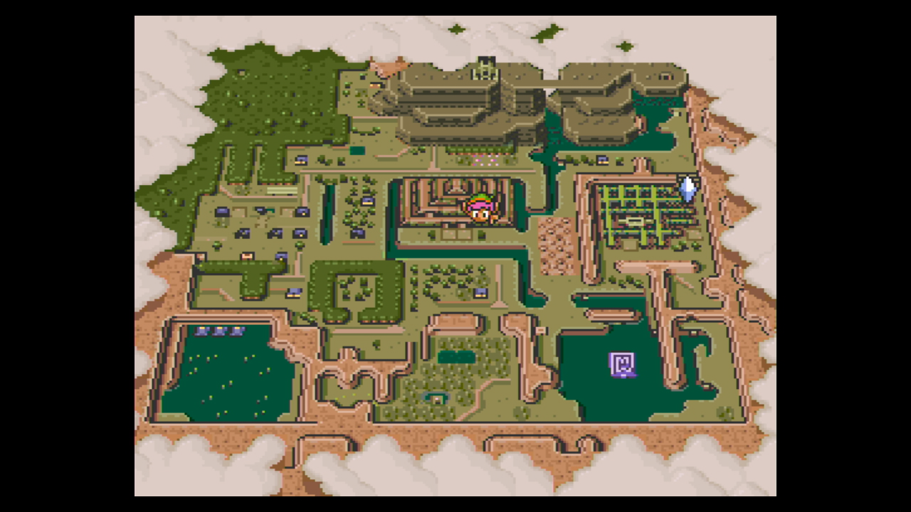

Sair
Home
Mapas
Fórum
Linha do tempo
ADM
Bem vindo fã de Zelda
Edital:
Visite o site oficial da Nintendo
Conheça alguns mapas da série
Mundo de "ocarina of time"
Mundo de "A Link to the past"

Mundo reverso de "A Link to the past"
Mundo de "Wind Walker"
Mundo do primeiro jogo da série
Mundo de "Majoras mask"
Mundo de "Breath of the wild"
❮
❯